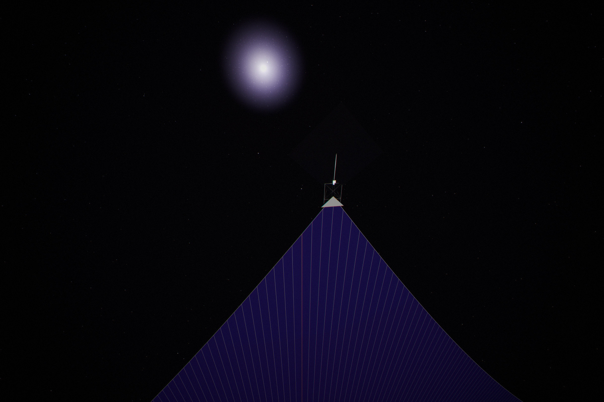
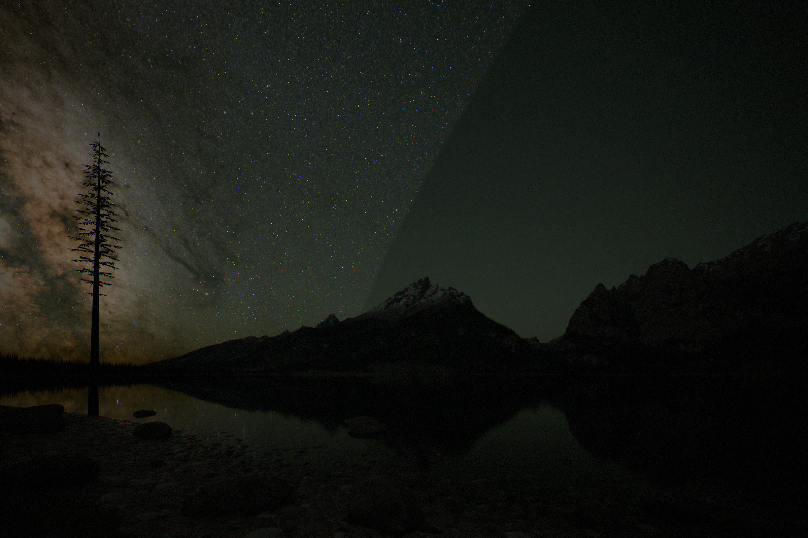
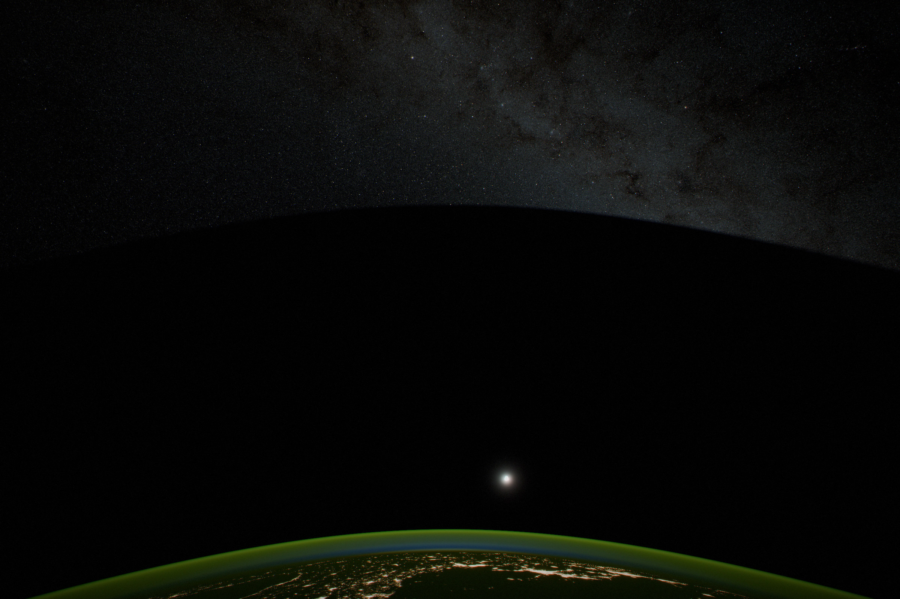
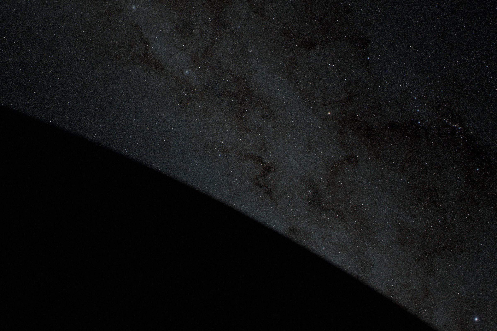
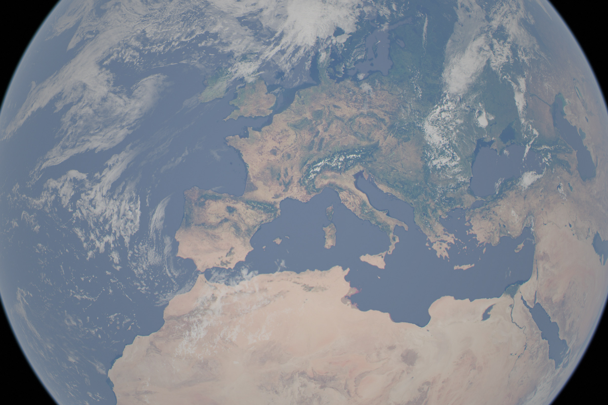
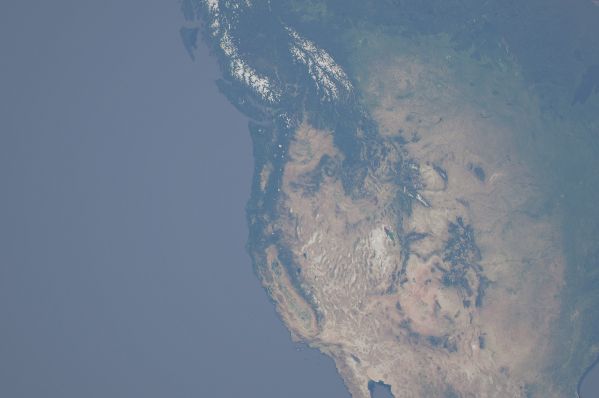
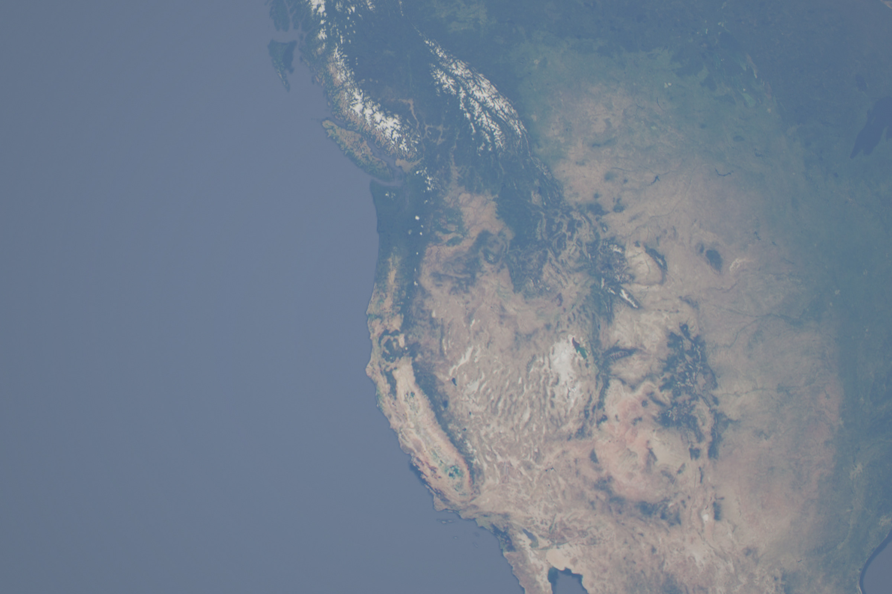
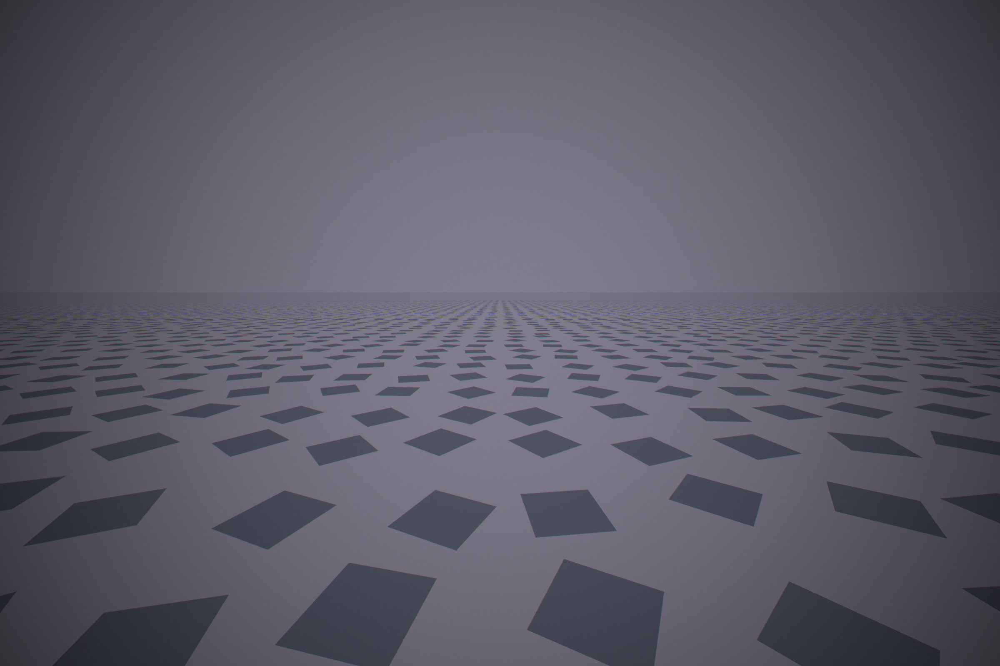

Most pictures of a Dyson swarm show the Sun wrapped in glittering machinery. We tried to work one out properly: take Mercury apart, turn it into solar panels that are also computers, and fly them around the Sun until it is enclosed. The swarm we ended up with is made of nearly black sheets that catch all of the Sun's light and let it out only through windows. One window is Earth's, so Earth keeps its sunlight and its temperature. What it loses is the night sky round the Sun. Every photograph and figure here comes from one physics model, and if you change an assumption the whole page recomputes.
The short version
Words and units used on this page
- Share of the Sun's light
- The fraction of everything the Sun puts out that the sails catch. The finished swarm catches all of it, except what it lets out through its windows.
- AU
- The distance from Earth to the Sun, 150 million km.
- W/m² of extra heat
- How much more energy Earth absorbs, for every square metre of its surface. Doubling the CO₂ in the air adds about 3.9.
- FLOP/s
- Calculations per second. One 2025 AI chip does about 10¹⁵; all of them together, about 3×10²².
- lux
- How brightly the ground is lit. A moonless night is 0.001, a full Moon 0.25, a lit street 10 to 20.
- cd/m²
- How bright a surface or a patch of sky looks. A dark night sky is 0.0002, the sky at dusk 1 to 100, a white page under office light about 100.
- Magnitude
- Astronomers' scale for points of light. Lower is brighter, and 5 steps is a factor of 100. The faintest stars you can see are +6, Venus −4.5, the full Moon −12.7, the Sun −26.7.
- Kelvin (K)
- Temperature counted up from absolute zero. A room is about 295 K, a chip at its limit about 360 K, and 1,650 K is orange-hot.
- Ecliptic
- The path the Sun and planets follow across the sky.
- L1 and L3
- L1 is the balance point 1.5 million km from Earth toward the Sun, where a sunshade can hover. L3 is the point on Earth's orbit directly behind the Sun, where sails would mirror light straight back at Earth, so they stay clear of it.
- Counter-sun
- The point in the sky exactly opposite the Sun. Every sail beyond you in that direction mirrors the Sun back at you at once.
- Thermal infrared
- The heat glow that thermal cameras see, here the 8–14 µm band. Warmer things are brighter.
A sheet, not a box
Each satellite is a huge, nearly black sheet of solar film, thinner than paper, which is also the computer.


The panel is the computer
The chips are spread through the film, so the film's own surface gets rid of their heat.


Why the chips are not in one box
Gathering the chips into one box would need pumps, pipes and radiators that weigh more than the chips. Spreading them out avoids all of it.


Where the rock comes from
Mercury has rock to spare. What it runs short of is a way to get rid of the heat of digging it up and throwing it into space.


Chip fabs set the pace, so they are the first thing to leave Mercury. In space a fab needs no building, no clean air and no water. The free vacuum alone removes about 60% of a fab's electricity and a third or more of its equipment. Mercury has almost no hydrogen, so the chemistry has to run dry, on chlorine, oxygen, zinc and magnesium.
How fast it can be built, and where it stops
For decades there is nothing to see. Then the swarm grows fast, until Mercury cannot shed heat any faster.
Earth keeps its sunlight, and loses the stars round the Sun
Between the Sun and Earth the swarm is a cap of cold mirrors with a window in it. By day nothing changes. At night the sky round the Sun is black.




A climate chosen region by region?
With this much energy, light on Earth becomes something you can place, down to a single field. Temperature follows it closely. Rain is harder, but the swarm can supply the water too.




Daylight in every direction
Inside a closed swarm there is no night and no sky. Every direction is the lit face of a sail.
Stand on the sunward side of the finished swarm and look anywhere but at the Sun. Every line of sight ends on the front of a sail: the ones beside you, or, across the empty middle of the swarm, the far side, 1.9 AU away, where every sail faces you. All of them are lit by the same Sun. They reflect only 0.4% of its light, but that is still about 180 cd/m² from every direction, as bright as the sky at sunset, and perfectly even. The mirror cap, seen from inside, only shows more of the same. Earth and the Moon are pinholes in it, too small to see.
There are no stars anywhere, and nothing stands out but the Sun itself. In the infrared the sky glows as a 419 K oven, which is what heats the swarm: every front radiates into it, and every other front absorbs what it radiates.

The Sun goes out, and a cool infrared star takes its place
From light-years away the Sun fades as the swarm grows, and its light comes back as warm infrared.
Choose your swarm
How big the swarm gets, and what Earth pays for it, is a choice. Pick one and the whole page, the numbers above included, recomputes for it.
The photographs always show the default: the finished swarm with the Sun enclosed.
Today's hardware never flies
The swarm takes a century and a half to build, so it is made of hardware that does not exist yet.